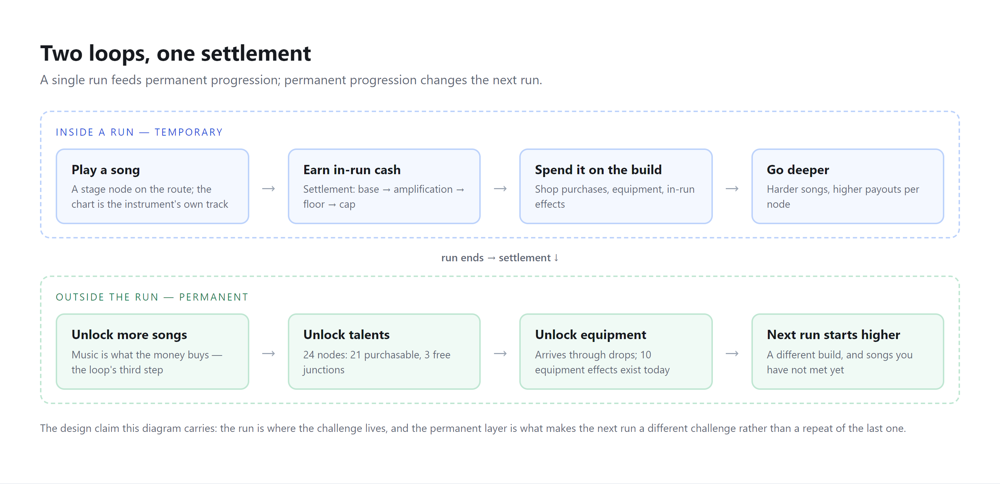
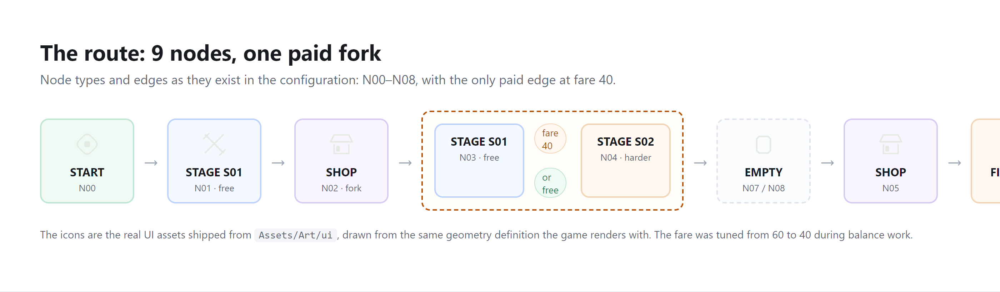
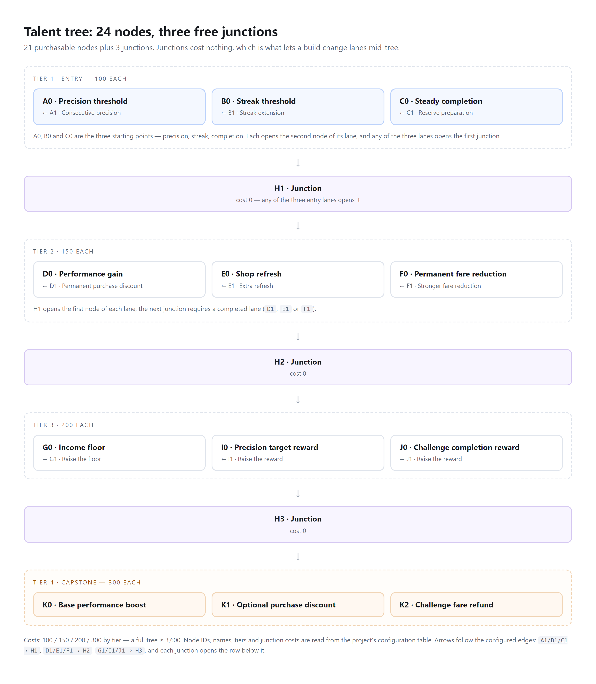
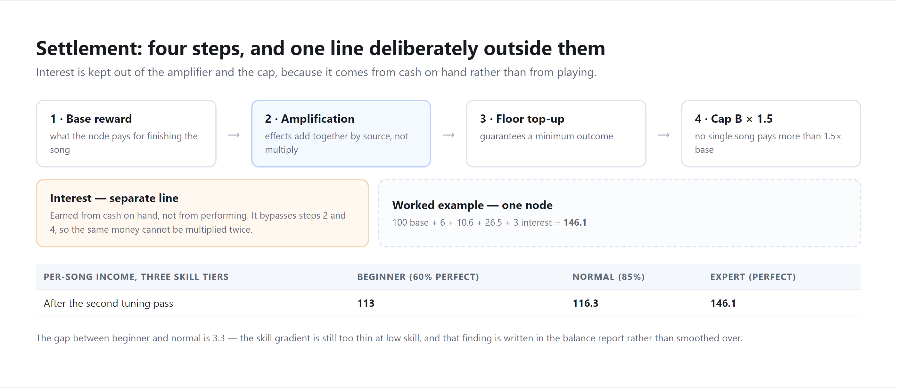
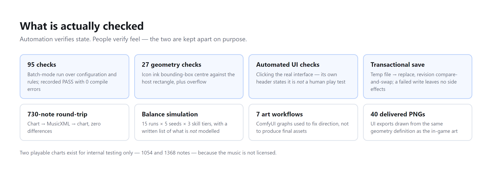
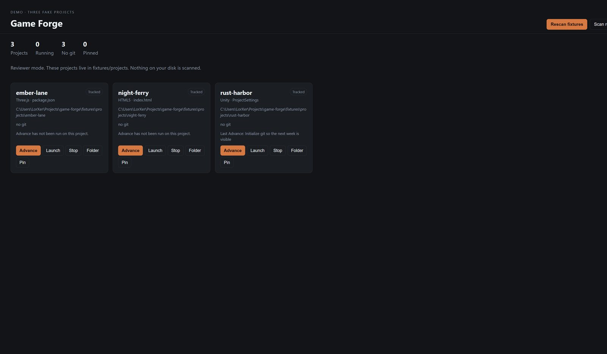
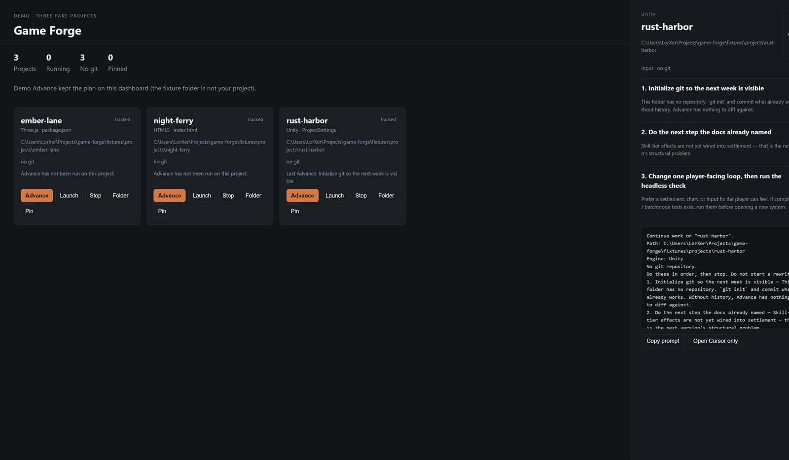
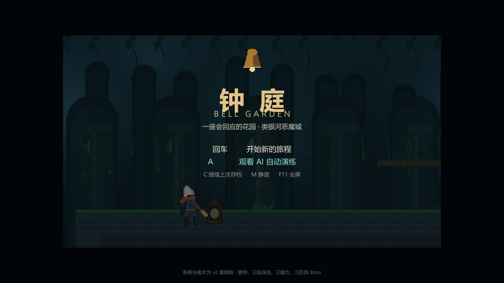
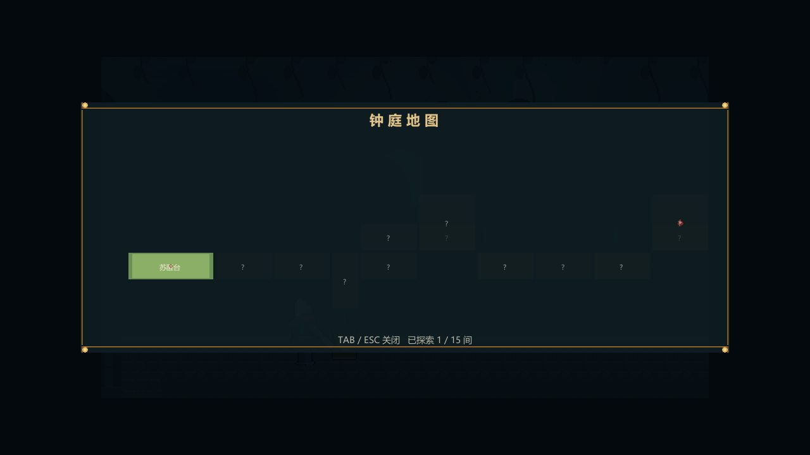
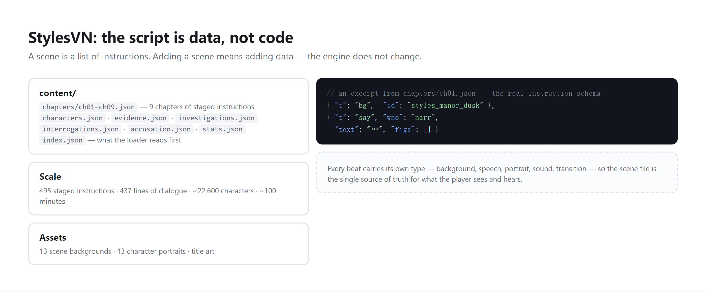

I am a game designer working on systems and the tools around them: the rules, the numbers,
and the tools other people author content with. I design them, direct the implementation, and verify the result on device.
Available for a 6-month internship from February 2027Amsterdam32 hours / weekMSc Business Administration (International Business), University of Amsterdam
Four projects, each with the problem it answers, what exists today, and how it is checked.
FallenAngel — a rhythm game where songs are encounters, not trophies
Rhythm games consume their own music: once you have FC'd or AP'd a song, you rarely come back to it. FallenAngel puts songs inside a run-based journey, so a song becomes a challenge you meet again instead of a trophy you retire.
The problem: players "collect" a song (收曲) — full combo or all perfect — and move on. The content is consumed by the act of mastering it, and the only reason to keep playing is to get better.
The answer: a run is a journey through a short map where songs return as present challenges, never permanent ones. Difficulty rises with depth and the player's build is what offsets it — instead of a fixed chart the player grows into.
One song, many charts: you perform the instrument's own track — the bass, the riff, the chords — so you hear parts that normally disappear under the melody, and you cover one seat rather than the whole song.
Honest status: the run structure and the out-of-run build framework are demoable; the playing core is being polished; the in-run build layer is scoped but not yet designed in detail.

The two layers: a run, and the permanent progression it settles into.

The route as configured: nine nodes, one paid fork at fare 40. Icons are the shipped UI assets.

24 talent nodes — 21 purchasable, 3 free junctions that let a build change lanes.

Settlement: base → amplification → floor → cap, with interest deliberately outside those steps.
What came out of it. The editor exists because charts had to be authored by hand — but looking back, it may be
worth more than the game it was built for. That turned out to be a pattern rather than a one-off: a quiz program made for my own
exam became a general-purpose study engine, and using AI to build games led to Game Forge. Valuable things tend to appear as
by-products of the work — but only when the work involves real testing and real trade-offs.

Automation verifies state; people verify feel — the two are kept apart on purpose.
Game Forge — the dashboard I designed to run my own projects
A local tool that scans the machine for game projects, launches any of them, and turns each project's README, tasks and Git state into the next three actionable steps.
Node.js, zero dependencies11 automated testsLocal only — never uploads
Detects projects by real markers and explicitly distrusts vendor files — a fix that came out of a real failure (a leftover bundle directory registered as a project), now covered by a regression test.
Deliberately small side effects: one file written per action, no project code touched, no commits made on my behalf.
"Advance" turns a project's README, TODOs and Git state into three next steps — with a written evidence file showing how the same project produces different suggestions when its state changes.

The dashboard in demo mode: project state and Git state in one view.

Advance on a project with no Git: three next steps and the prompt behind them.
Bell Garden — a metroidvania vertical slice
Nine areas, three abilities and a three-phase boss, in a slice that plays itself to completion as a regression check.
UnityWindows + AndroidIn progress
Abilities gate classes of space rather than single doors, so the map communicates progress by itself.
Every enemy type telegraphs and punishes, so fights are about timing rather than a bigger number.
I audited the first version against open-source examples of the genre and then directed a full rewrite of the systems and the art, rather than patching a structure I no longer trusted.

Vertical slice: 9 areas, 15 rooms, 3 abilities.

The map is a first-class feature, not a debug overlay — a 15-room map has to stay legible.
StylesVN — a narrative pipeline where the script is data
A full-length visual novel project built around one question: can a script drive everything? Nine chapters, 495 staged instructions, 437 lines of dialogue, ~22,600 characters.
Unity 2022.3 LTSWindows + AndroidIn progressNon-commercial fan work
Every beat is data — background, speaker, portrait, sound, transition — so adding a scene never touches the engine.
One command compiles, validates the content and then plays the entire story to its ending: a two-second feedback loop instead of a two-minute one.
Licensing is split explicitly: MIT code, all-rights-reserved assets with a fan-work clause, itemised third-party notices.

The content pipeline and the instruction schema every chapter shares.Thirteen scene backgrounds and thirteen character portraits drive the staging.
How I work
Three habits that show up in every project above.
Design claims get tested
If a design says "playing better should pay better", there is a simulation behind that sentence — and its boundary conditions are written down too.
Production problems become tool problems
When content costs too much to produce, the answer is a tool rather than more hours. When the tool is not good enough, that answer gets abandoned rather than defended.
Automation verifies state; people verify feel
Automated checks confirm that systems behave. Whether something feels right is decided by playing it — the projects keep those two separated on purpose.
How I work with AI: implementation is written with AI assistance under my direction — the design
decisions, the scope rules and the on-device verification are mine. Two decisions went the other way from "build more":
auto chart conversion was stopped when the output was worse than hand-authoring, and per-note instrument sampling was
shelved when the cost exceeded what one person could finish.
95batch-mode checks on FallenAngel, plus 27 icon geometry checks
11automated tests on Game Forge, including two regressions for real defects
730notes verified in a zero-difference chart ↔ MusicXML round trip
2design choices inside the chart editor: cross-format import, and a horizontal DAW-style authoring view
Contact
Happy to demo the run loop, walk through the balance model, or talk about any decision I stopped or shelved.